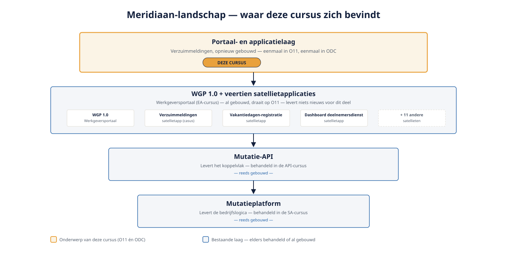

Deel 1 — Wat low-code wél en niet oplost
Slidedeck · Ductus-cursus OutSystems · Niveau 1 — Fundament · deel 1 van 30 · 16 slides
Slide 1 — Title: OutSystems: Fundament
OutSystems: Fundament
Deel 1 — Wat low-code wél en niet oplost
Meridiaan-casus: Verzuimmeldingen
Slide 2 — Section: Waar dit deel in het geheel past
Waar dit deel in het geheel past
Slide 3 — Bullets: De laag die nog ontbrak
De laag die nog ontbrak
- Mutatieplatform levert logica (SA-cursus)
- Mutatie-API levert koppelvlak (API-cursus)
- WGP 1.0 en veertien satellieten leveren niets nieuws — die staan er al, in O11
- Deze cursus: de portaal- en applicatielaag erbovenop, in O11 én ODC

Slide 4 — Statement: Low-code verschuift complexiteit.
Low-code verschuift complexiteit.
Het elimineert haar niet.
Slide 5 — Bullets: Wat low-code oplost
Wat low-code oplost
- Snelheid van bouwen bij formulier- en procesgedreven apps
- Afgedwongen structuur en consistentie
- Snellere onboarding — visuele flow versus duizend regels code
- Traceerbaarheid tussen model en resultaat
Slide 6 — Bullets: Wat low-code niet oplost
Wat low-code niet oplost
- Domeincomplexiteit blijft complex
- Technische schuld bestaat ook hier
- Prestatie-eisen vragen nog steeds ontwerpkeuzes
- Het platform kiest niet voor je
Slide 7 — Opdracht: Opdracht 1.1 — Low-code herkennen
Opdracht 1.1 — Low-code herkennen
Drie stellingen over Verzuimmeldingen.
Los op door het platform, of ontwerpkeuze?
→ Werkboek 1.1
Slide 8 — Section: Wanneer OutSystems geen antwoord is
Wanneer OutSystems geen antwoord is
Slide 9 — Bullets: Drie signalen om nee te zeggen
Drie signalen om nee te zeggen
1. Rekenintensieve/algoritmisch zware verwerking
2. Zeer hoogfrequente, latency-kritische paden
3. Volledige controle over de runtime vereist
Slide 10 — Opdracht: Opdracht 1.2 — Nee durven zeggen
Opdracht 1.2 — Nee durven zeggen
Drie toekomstige uitbreidingen bij Meridiaan.
Past OutSystems hier, en waarom (niet)?
→ Werkboek 1.2
Slide 11 — Section: De twee platformen in vogelvlucht
De twee platformen in vogelvlucht
Slide 12 — Table: O11 versus ODC — eerste kennismaking
O11 versus ODC — eerste kennismaking
| OutSystems 11 | OutSystems Developer Cloud | |
|---|---|---|
| Ontwikkelomgeving | Service Studio | ODC Studio |
| Lifecycle-beheer | LifeTime | ODC Portal |
| Deployment | Publish naar Environment | 1-Click Publish |
| Bij Meridiaan | Zes jaar productie, 14 satellieten | Net afgesloten, nieuwbouw |

Slide 13 — Statement: Gedeelde taal.
Gedeelde taal.
Verschillende uitvoering.
Slide 14 — Opdracht: Baan A / Baan B
Baan A / Baan B
A — Verkenning Service Studio (O11)
B — Verkenning ODC Studio
→ Werkboek, eigen baan
Slide 15 — Bullets: Kernpunten deel 1
Kernpunten deel 1
- Low-code verschuift complexiteit, elimineert haar niet
- Elke architectuurkeuze blijft jouw keuze
- Drie signalen om OutSystems níét te kiezen
- O11 en ODC: gedeelde taal, eigen tooling — beide komen volledig aan bod
Slide 16 — Section: Volgende deel: Platformanatomie
Volgende deel: Platformanatomie